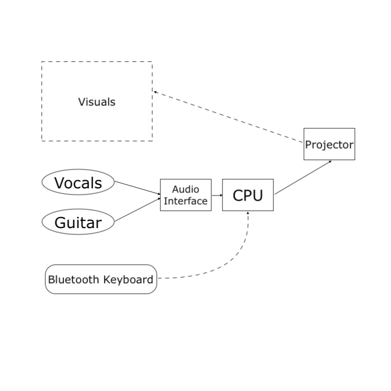

Complex, projected visuals reacting to live performance in manually constructed scenes (all 2 examples here).
A deepdive video explanation of the project network and how it enhances the performance's artistic expression.
A diagram outlining the projects' hardware and information flow.
